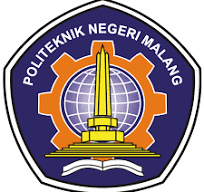

TEKNIK INFORMATIKA
Pada tahun 2010 berdasar kebutuhan masyarakat dan industri terkait program diploma IV bidang informatika maka polinema mendirikan program studi baru diploma IV (DIV) teknik informatika (TI). Pada awal berdirinya jumlah peserta didik program D-IV TI hanya terdiri dari 46 mahasiswa, namun pada tahun 2015 jumlah peserta didik prodi D-IV TI telah mengalami peingkatan menjadi 545 mahasiswa.
Perkembangan jumlah mahasiswa yang sangat pesat baik di program studi D-III MI maupun D-IV TI mendorong pimpinan di polinema untuk menyatukan kedua program studi tersebut dalam satu organisasi jurusan baru terpisah dari jurusan teknik elektro. Dibawa jurusan baru terpisah dari jurusan teknik elektro. Dan pada tahun 2015 berdasarkan SK Direktur Nomor 53 dalam rangka peningkatan mutu pengelolaan dan optimasi sumber daya dibentuklah jurusan teknologi informasi (JTI) dengan prodi D-III MI dan D-IV TI.